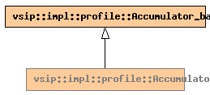

Global Namespace
Inheritance Tree
Inheritance Graph
Name Index
template <unsigned int
Feature
>
class
vsip
::
impl
::
profile
::Accumulator
File:
../../../vsip/core/profile.hpp

-
Public Member functions
constructor
Accumulator
(const std::string&
n
, unsigned int
c
=
0
)
-
Private Typedefs
Accumulator_base
<*>
base
Generated on Sat Apr 17 11:14:23 2010 by
synopsis
(version 0.12)
 synopsis
synopsis